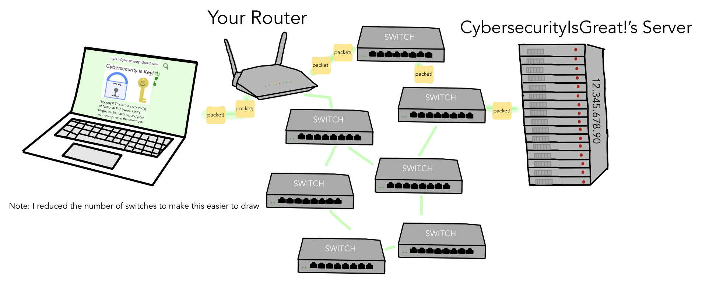
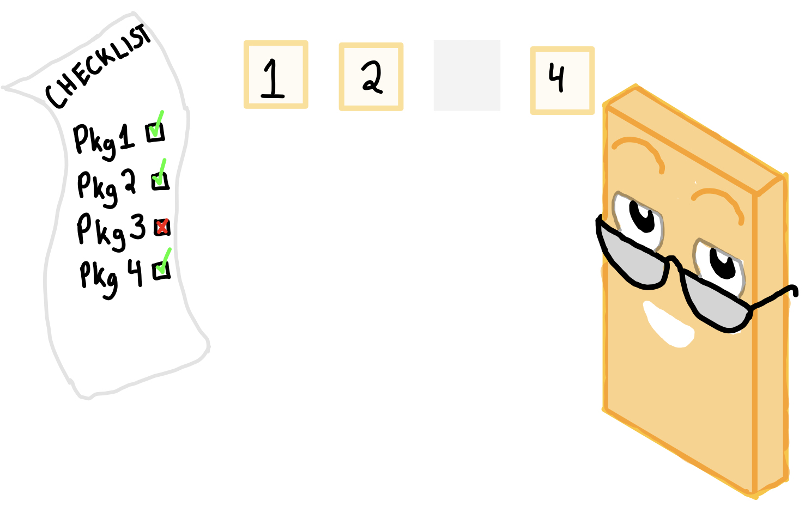
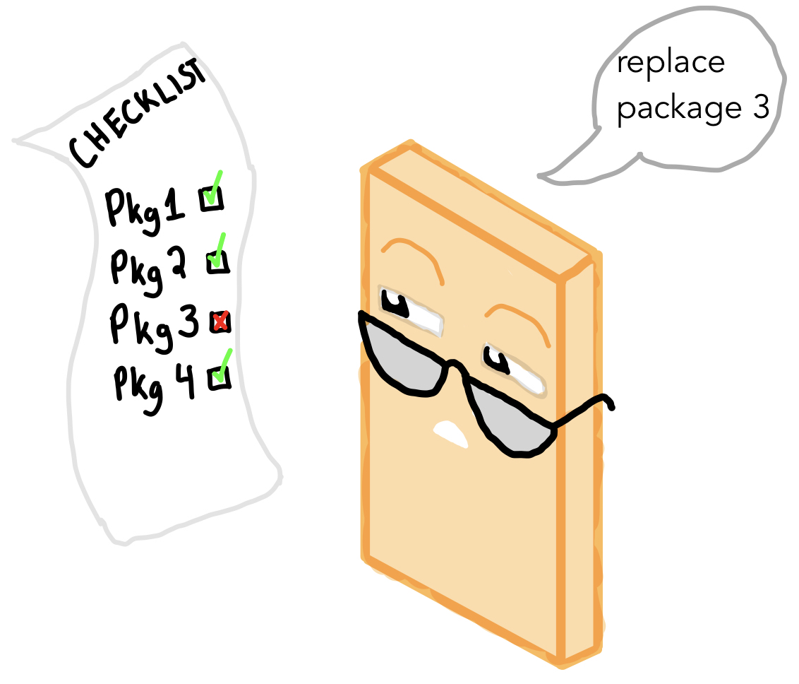
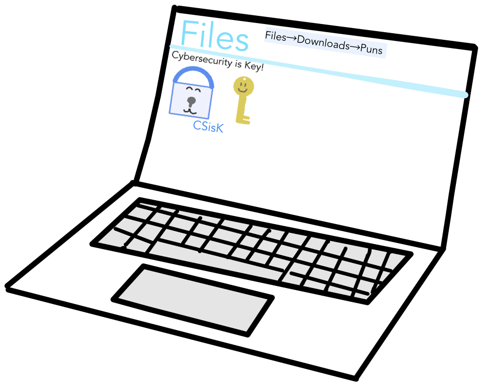

Networks
What is a network?
A network is a a group or system or interconnected people or things (dictionary definition). For this badgr requirement, we will be talking about computer networks (a.k.a the internet), which is made up of servers, routers, switches, and devices (phone, tablet, laptop, etc).
When you look up a webpage on your laptop, tablet, or phone, you are sending a request to the website's server. When you search for a website, you type in the URL, but that is linked to the website's IP adress in the DNS, a computer that stores websites' URLs along with their IP adresses.
Each device (severs, computers, routers, etc.) has a unique IP adress. An IP adress is like a normal adress that you use to sent a package to someone. Instead of a country, city, state, etc. you have four numbers. The switches use those numbers to pass the information on.
When you send the request, your computer doesn't connect directly to the server. It passes through multiple switches that lead your request to the correct server.

How does Data Get Delivered?
When you try to download a song, image, or other thing, you are sending a request to the server that the website you want to download is on. When the server gets that request, it sends the thing you want to download back in something called a packet. If the thing you want is big (like a video or song) it will send multiple packets back and will be reassembled by a program called the TCP. The TCP makes sure all of the parts are there and puts them in order. If some parts are missing, the server sends back those parts.
For example, let's say that you want to download an image from CybersecurityIsGreat.com:

When you click the 'download' button, you send a request to the server of CybersecurityIsGreat.com. Let's just say that the IP adress for the website is 12.345.678.90. the switches use 12.345.678.90 to send the request to CybersecurityIsGreat!'s server. The server will send the data in a packet or two back to you.
Finally, when all of the packets get to your device, the TCP makes sure all of the packets are in order and are all there.
Oh No! One of the packets is missing! Now, TCP will tell the server to send a replacement.
Once all of the packets are there, the image will be downloaded!
